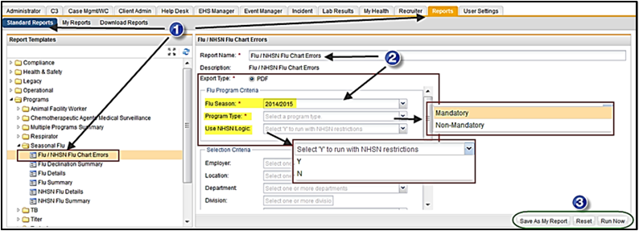
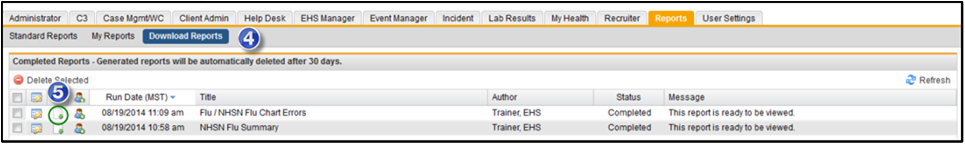
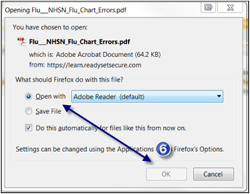
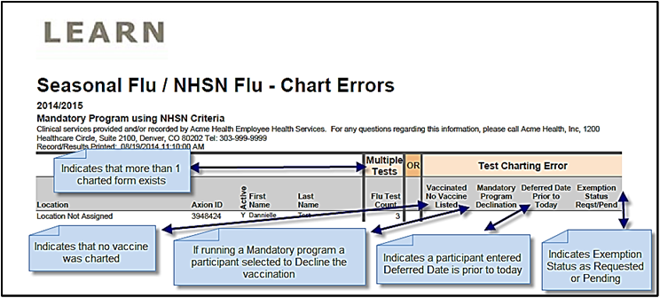

The Flu/NHSN Flu Chart Errors report is summary report that displays a listing of those participants that have charting errors that will affect the NHSN reporting numbers or the general reporting numbers for your organization. This is a simple report to run and gives very valuable information.
On the Reports tab, click Standard Reports > Programs > Seasonal Flu folder, then click on Flu/NHSN Flu Chart Errors.
You can customize the Report Name. Then complete the Selection Criteria to create the report that you want.
Flu Season* – defaults to current flu season year
Program Type * – Mandatory or Non-Mandatory – select the correct program type per your facility.
Use NHSN Logic – allows you to use the NHSN logic, Y or N.
Click Run Now. The report is created in PDF format.

Click Download Reports to view the report. You may see these processing messages - "Report is queued", "Report is processing", and when the report is ready, "This report is ready to be viewed". The icons are to Edit, View and Share
Click the View icon to download the report. The report will open in PDF format.

Click OK for the Open with Adobe Reader (default) option.

View the information displayed in the Seasonal Flu/NHSN Flu – Chart Errorsreport. This report will display any participant that has either Multiple Charts or Charting Errors.

Multiple Tests – This column will display if there is more than one submitted Seasonal Flu charting form for a single participant.
Test Charting Error – These columns will note if any of the listed conditions exist:
Vaccinated / No Vaccine Listed – indicates that no vaccine was selected when charting.
Mandatory Program Declination – indicates that if running a Mandatory program a participant selected the option to decline the vaccination or was charted as a declination instead of an exemption.
Deferred Date Prior to Today – indicates a participant’s requested deferred date is prior to today. So the participant should either be vaccinated or the deferred date needs to be extended.
Exemption Status Request/Pending – indicates Exemption Status is in a Request or Pending Status.
By running this report, the user can determine the number of NHSN Numerators that corresponds with the Denominators in the NHSN Report.